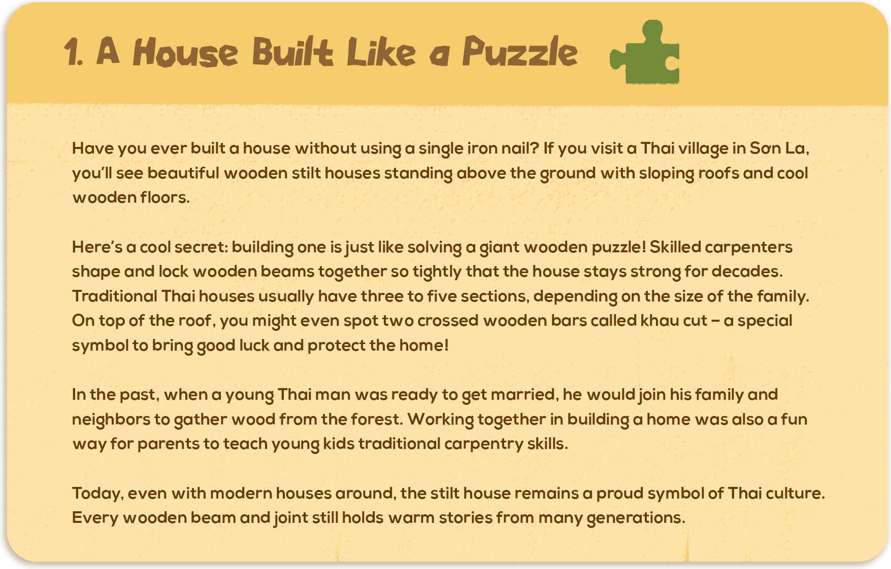

1. A House Built Like a Puzzle
Have you ever built a house without using a single iron nail? If you visit a Thai village in Son La, you’ll see beautiful wooden stilt houses standing above the ground with sloping roofs and cool wooden floors.
Here’s a cool secret: building one is just like solving a giant wooden puzzle! Skilled carpenters shape and lock wooden beams together so tightly that the house stays strong for decades. Traditional Thai houses usually have three to five sections, depending on the size of the family. On top of the roof, you might even spot two crossed wooden bars called khau cut – a special symbol to bring good luck and protect the home!
In the past, when a young Thai man was ready to get married, he’d join his family and neighbors to gather wood from the forest. Working together in building a home was also a fun way for parents to teach young kids traditional carpentry skills.
Today, even with modern houses around, the stilt house remains a proud symbol of Thai culture. Every wooden beam and joint still holds warm stories from generations.